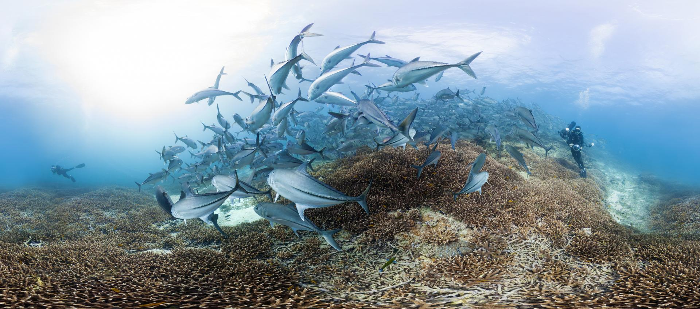
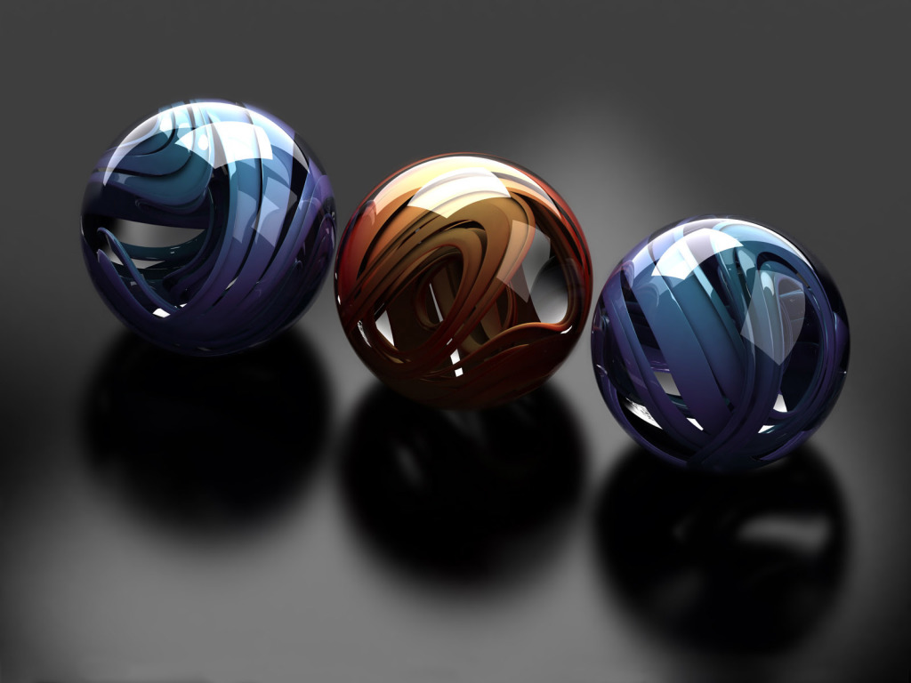
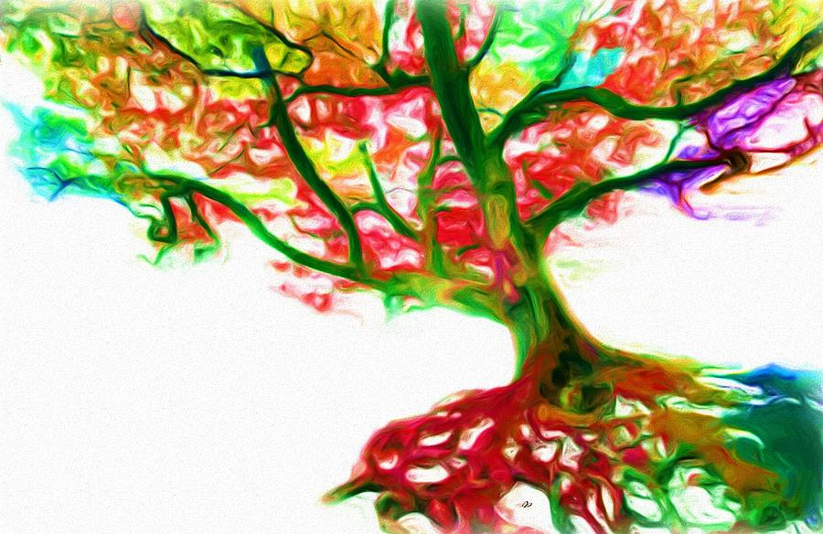
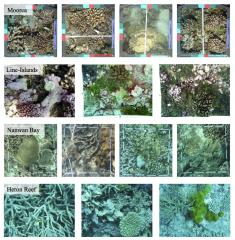
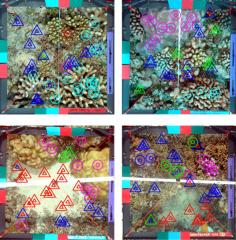

Oscar Beijbom
I'm doing a post-doc at the Berkeley Vision and Learning Center, where I work on automated quantification of scientific image-data using deep learning. My work is jointly supervised by Trevor Darrell at UC Berkeley and Ove Hoegh-Guldberg at University of Queensland.
Before this, I studied computer vision and machine learning at UCSD under David Kriegman and Serge Belongie, and engineering physics at Lund University under Kalle Åström.
Outside academia, I was lead developer at Hövding where I created the algorithmic framework and hardware design for their invisible bicycle helmet. I have also worked on automated dietary logging systems for consumer applications and focusing algorithms for image-based cell analysis.
Lately I have been having tons of fun developing CoralNet, deploying deep convolutional neural networks to help coral reef ecologists mine image data.
Projects
Some of my favorite previous and current research projects.
Mapping the Worlds Coral Reefs
UCSD, San Diego, California
With the world's coral reef in unprecedented decline, much effort is focused on research, restoration, and conservation. Towards these ends, ecological composition across large spatial and temporal scales needs to be measured. Fortunately, progress in digital imagery and underwater robotics allow for rapid collection of large image corpora. Unfortunately, however, subsequent manual image analysis is prohibitively time consuming creating a "manual annotation bottleneck" between collected images and tabulated data.
Addressing this bottleneck was the over-arching goal of my PhD, and culminated with the creation of CoralNet. CoralNet implements the computer vision methods that I developed, and allows researchers, agencies, and private partners to processed their survey images in several automated and semi-automated annotation modes. The site also serves as a repository and collaboration platform for the scientific community. Current users include the NOAA Coral Reef Ecosystem Program, the Catlin Seaview Survey, the the Australian Institute of Marine Science, Washington State University, University of Washington, University of North Carolina, Scripps Institution of Oceanography, Colby College, and Stanford@Sea. Photo credit: Catlin Seaview Survey
Learning to Count
UC Berkeley, California
 Quantifying the content of a single image, or a set of images is important in many practical situation. Visual sampling surveys, for example, which is used throughout the natural sciences, require just this. With this in mind, there is surprisingly little work on this topic in computer vision, as it falls outside the standard tasks of classification, segmentation or detection.
I have looked at a few aspects of this problem. For example: how do you best integrate an automated annotation system when designing a random sampling survey, or what is the optimal way to quantify the class-distribution under domain-shift given a finite set of images?
Classifying with Costs
UCSD, San Diego, California
 Supervised machine learning algorithms are typically studied for cost-balanced binary classification, where the goal is to separate two equally important classes. However, in many practical situations, there are multiple classes, and in addition, misclassification costs may vary. This leads to the more challenging problem of cost-sensitive multiclass learning.
I worked with Steve Branson on a structured Support Vector Machine solver for cost-sensitive multiclass learning that converges orders of magnitudes faster than previous solvers. In another project I examined loss functions for cost-sensitive multiclass learning together with Mohammad Saberian, and identified a property, guess-averseness, which has strong empirical importance.
Counting Calories
Microsoft Research, Seattle, Washington, USA
 The World Health Organization (WHO) predicts that overweight and obesity may soon replace more traditional public health concerns such as under-nutrition and infectious diseases as the most significant cause of poor health. Logging food and calorie intake has been shown to facilitate weight management, but current food logging methods are time-consuming and cumbersome, which limits their effectiveness.
The World Health Organization (WHO) predicts that overweight and obesity may soon replace more traditional public health concerns such as under-nutrition and infectious diseases as the most significant cause of poor health. Logging food and calorie intake has been shown to facilitate weight management, but current food logging methods are time-consuming and cumbersome, which limits their effectiveness.
During an internship at Microsoft Research, I worked with Neel Joshi and Dan Morris, to develop a practical method for food-logging from images. The method utilize a data-base of menu items to estimate the nutritional content of the query image, and we demonstrate robust performance on a dataset of realistic food images.
Building An Invisible Bike Helmet
Hövding AB, Malmö Sweden
 From Hövding's website: "Hövding is a bicycle helmet unlike any other currently on the market. It's ergonomic, it's practical, it complies with all the safety requirements, and it's also subtle and blends in with what else you are wearing. Hövding is a collar for bicyclists, worn around the neck. The collar contains a folded up airbag that you'll only see if you happen to have an accident. The airbag is shaped like a hood, surrounding and protecting the bicyclist's head. The trigger mechanism is controlled by sensors which pick up the abnormal movements of a bicyclist in an accident. Hövding is a practical accessory that's easy to carry around, it's got a great-looking yet subtle design, and it will save your life."
From Hövding's website: "Hövding is a bicycle helmet unlike any other currently on the market. It's ergonomic, it's practical, it complies with all the safety requirements, and it's also subtle and blends in with what else you are wearing. Hövding is a collar for bicyclists, worn around the neck. The collar contains a folded up airbag that you'll only see if you happen to have an accident. The airbag is shaped like a hood, surrounding and protecting the bicyclist's head. The trigger mechanism is controlled by sensors which pick up the abnormal movements of a bicyclist in an accident. Hövding is a practical accessory that's easy to carry around, it's got a great-looking yet subtle design, and it will save your life."
I was fortunate to be the first employee at Hövding where my task was to develop the accident detection system from scratch. This involved everything from selecting hardware sensors, collecting train data, setting up a computational infrastructure, defining target performances, and developing the actual algorithm. I worked with a small team of engineers on this task.
Hövding has been covered in thousands of video and news-releases, including stories from NBC, WIRED, The Washington Post, and der Spiegel. Filmmaker Fredrik Gerttens short-film about Hövding have been viewed over 20 million times. Some of my other personal favorites are this story by a Swiss independent reporter, and this one by a German talk show host. Please see Hövdings press page for a complete list.
Blood cell focus
Cellavision AB, Lund Sweden
 From Cellavisions website: "CellaVision develops and markets products for the health care sector, enabling fast and firm blood cell analysis and quality assurance of morphology diagnosis. The company has cutting-edge expertise within sophisticated digital image analysis, artificial intelligence and automated microscopy. For laboratories, this means increased efficiency, a simplification of the procedures and confirmed proficiency. The product line includes systems for automatic blood cell differentials and software for differential proficiency testing and education. The products are sold to hospitals and laboratories in Europe, North America and Asia."
From Cellavisions website: "CellaVision develops and markets products for the health care sector, enabling fast and firm blood cell analysis and quality assurance of morphology diagnosis. The company has cutting-edge expertise within sophisticated digital image analysis, artificial intelligence and automated microscopy. For laboratories, this means increased efficiency, a simplification of the procedures and confirmed proficiency. The product line includes systems for automatic blood cell differentials and software for differential proficiency testing and education. The products are sold to hospitals and laboratories in Europe, North America and Asia."
I did my masters thesis at Cellavision, where I worked on a single-image focus level assessment method for blood cell images. This is in contrast with standard methods for image focusing that use multiple images together to determine focus level. The method I developed has an international patent and is currently deployed in Cellavision products.
Selected publications
Full list of publications is available at Google Scholar profile
- O. Beijbom et al. "Towards automated annotation of benthic survey images: Variability of human experts and operational modes of automation". PLoS One, 2015. [pdf] [www] [data]
- O. Beijbom, N. Joshi, D. Morris, S. Saponas, S. Khullar. "Menu-Match: Restaurant-Specific Food Logging from Images". Winter Conference on Applications of Computer Vision (WACV), 2015. [paper] [data] [www]
- O. Beijbom*, M. Saberian*, N. Vasconcelos, D. Kriegman. "Guess Averse Loss Functions for Cost-Sensitive Multiclass Boosting". International Conference on Machine Learning (ICML), Beijing, June 2014. *equal contribution. [paper] [supp. info] [talk (ppt)] [talk (video)] [poster] [code]
- S. Branson, O. Beijbom, S. Belongie. "Efficient Large-Scale Structured Learning". IEEE Conference on Computer Vision (CVPR), Portland, Oregon, June 2013. [paper] [talk (ppt)] [talk (video)] [code]
- O. Beijbom, P.J.Edmunds, D.I.Kline, B.G.Mitchell, D.Kriegman. "Automated Annotation of Coral Reef Survey Images". IEEE Conference on Computer Vision (CVPR), Providence, Rhode Island, June 2012. [paper] [data]
Press
- Mar 2015: Our UCSD research expo poster highlighted on the UCSD Jacobs School of Engineering blog. [www]
- Nov 2014: Jonathan Cohen at NVIDIA highlights CoralNet in his talk at the SuperComputer conference. CoralNet section starts at 9.30. [www]
- May 2014: Destin at SmarterEveryDay follows the data collected by the Catlin Seaview Survey all the way to CoralNet. [www]
- November 2013: NBCnews does a nice story on Hövding. [www]
- September 2013: Greenwire covers CoralNet. [www]
- April 2012: German TV talk-show host tries to outsmart the accident detection system of Hövding. Check out 05:45 where a stunt man stages an accident and Hövding inflates, and 07:10 - 8:00 where the host tries to trick Hövding into inflating when it shouldn't! [www]
- May 2012: Fredrik Gerttens creates a short-film about the founders of Hövding. [www]
Data
Below are links to some data-sets that I have packaged or published
Quantification data-sets
 This data-set is an aggregate of two marine ecology data-sets packaged for quantification and domain adaptation experiments. One data-set is a Caribbean coral reef survey by the Catlin Seaview Survey, and one a plankton time-series from Martha's Vineyard Coastal Observatory. The two data-sets, while superficially different, pose the same question, namely: how can we quantify the label-distribution across multiple repeated data-set shifts at the lowest possible manual annotation effort?
This data-set and the quantification challenge are described in this arXiv preprint, which in turn reference the original publications.
This data-set is an aggregate of two marine ecology data-sets packaged for quantification and domain adaptation experiments. One data-set is a Caribbean coral reef survey by the Catlin Seaview Survey, and one a plankton time-series from Martha's Vineyard Coastal Observatory. The two data-sets, while superficially different, pose the same question, namely: how can we quantify the label-distribution across multiple repeated data-set shifts at the lowest possible manual annotation effort?
This data-set and the quantification challenge are described in this arXiv preprint, which in turn reference the original publications.
Pacific Labeled Corals
Pacific Labeled Corals is an aggregate dataset containing 5090 coral reef survey images from four Pacific monitoring projects in Moorea (French Polynesia), the northern Line Islands, Nanwan Bay (Taiwan) and Heron Reef (Australia). Pacific Labeled Corals contain a total of 251,988 expert annotations across 4 pacific reef locations, and can be used as a benchmark dataset for evaluating object recognition methods and texture descriptors as well as for domain transfer learning research. The images have all been annotated using a random point annotation tool by a coral reef expert. In addition, 200 images from each location have been cross-annotatoed by 6 experts, for a total of 7 sets of annotations for each image. The PLC dataset was published in PLoS ONE.
Moorea Labeled Corals
The Moorea Labeled Corals dataset is a subset of the Moorea Coral Reef-Long Term Ecological Research (MCR-LTER) dataset packaged for Computer Vision research. It contains over 400.000 human expert annotations on 2055 coral reef survey images from the island of Moorea in French Polynesia. Each image has 200 expert random point annotations, indicating the substrate underneath each point.
The MLC dataset was published at CVPR 2012.
This website is inspired by Peter Welinder. Thanks Peter!